- 問題ID : 15852 シェルスクリプト
- 履歴
下図のシェルスクリプト「sample.sh」について、正しい実行結果は次のうちどれか。
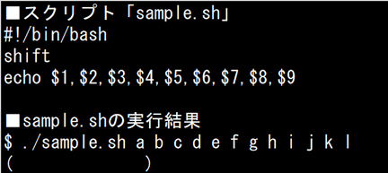
正解
b,c,d,e,f,g,h,i,j
解説
以下はシェルの主な特殊変数です。
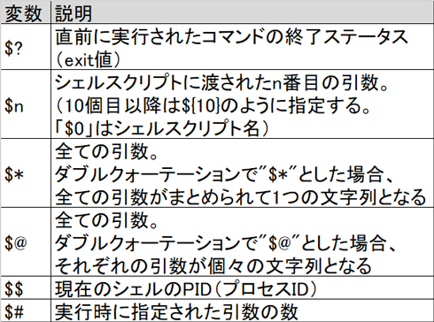
上表より、特殊変数「$n」にはシェルスクリプトに渡されたn番目の引数が格納されます。
設問のように「sample.sh」を実行すると、「sample.sh」に渡された a から l の12個の引数はそれぞれ「$1=a」「$2=b」...「${12}=l」のように、順番に特殊変数に格納されます。
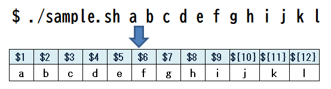
スクリプトの2行目のshiftコマンドは指定した数の分、引数の位置を番号の小さい方にずらすコマンドです。
書式：shift [n]
設問のスクリプトのようにnを指定しない場合は、引数を1つずつずらします。つまり、引数の位置が1つずつ左にシフトします。
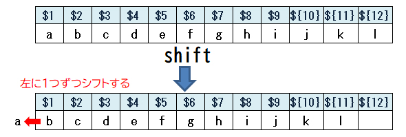
3行目のechoコマンドでは$1～$9を表示していますので、shiftコマンドでシフトした後の引数「b,c,d,e,f,g,h,i,j」が表示されます。
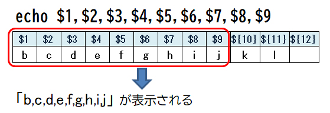
したがって正解は
・b,c,d,e,f,g,h,i,j
です。
以下は設問のスクリプトの実行結果です。
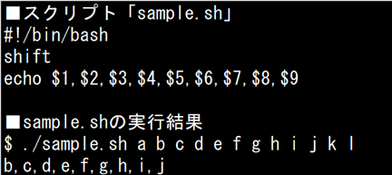
その他の選択肢の結果にはなりませんので、全て誤りです。
参考
bashにはシェルが管理する情報にアクセスするための特殊な変数があります。
以下はシェルの主な特殊変数です。
特
殊変数「$?」に格納される値は直前に実行したコマンドによってセットされます。一般的に正常終了時には終了ステータスを「0」とし、異常終了した場合に
はその原因を表す終了ステータスがセットされます。そのため、同じコマンドでもエラーの内容によって格納される終了ステータスは異なります。
この特殊変数によってシェルスクリプト内で実行した処理の結果を判定することができます。
以下は実行例です。
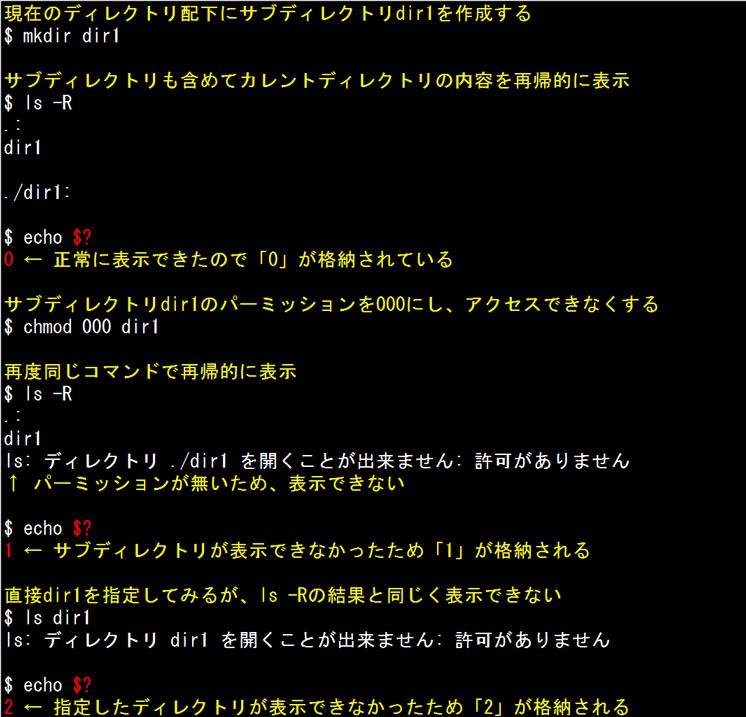
特殊変数「$$」には、現在のシェルのPIDが格納されます。
以下は実行例です（実行環境によって表示されるPIDは異なります）。
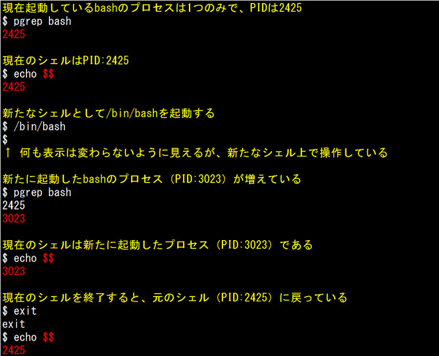
特 殊変数「$#」と「$n」は引数の数と、引数の指定した位置の引数の値がセットされます。ただし、「$n」についてはnが2桁以上のときに$の次の数字だ けを引数の位置と認識してしまい、意図しない値を参照することになります。この場合、変数名を{}で囲むことで正しく扱うことができるようになります。
確認のため、以下の内容でシェルスクリプト「sample.sh」を作成します。
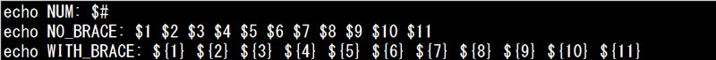
※コピーペーストする場合は以下の3行をご利用ください。
---ここから---
---ここまで---
echo NUM: $#
echo NO_BRACE: $1 $2 $3 $4 $5 $6 $7 $8 $9 $10 $11
echo WITH_BRACE: ${1} ${2} ${3} ${4} ${5} ${6} ${7} ${8} ${9} ${10} ${11}
以下は作成した「sample.sh」を使った実行例です。
まず、引数に何も指定せず実行してみます
・「$#」を参照すると、引数が何もセットされていない（0個）であることが確認できます
・「{}」で囲んでいない方では「0 1」が表示されます。これは「$1"0" $1"1"」と解釈されるためで、$1には何も値が入っていないので文字としての「0 1」だけが表示されることになります。
・「{}」で変数名を囲んだ側は、値の入っていない「${10}」、「${11}」を正しく参照しており、何も表示されません。
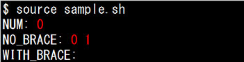
今度は12個のアルファベットを引数に指定してみます。
・「$#」を参照すると、引数が12個セットされていることが確認できます
・「{}」で囲んでいない方では「j（10番目）」と「k（11番目）」が正しく表示されていません。「$10 $11」が「$1（=a）"0" $1（=a）"1"」と解釈され、「a0 a1」という表示になるためです。
・「{}」で囲んだほうは正しく位置番号を認識し、「j k」と表示できています。
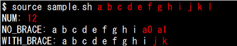
なお、上記例のように、スクリプトに定義している以上の個数の引数を指定した場合、エラーにはならず、特殊変数自体には格納されますが、スクリプトの処理対象ではないため、表示などはされません。上例の「l」がこれに該当します。
●shiftコマンド
shiftコマンドは指定した数の分、引数の位置を番号の小さい方にずらすコマンドです。
書式：shift [n]
nを指定しない場合は、引数を1つずつずらします。つまり、引数の位置が1つずつ左にシフトします。
以下はshiftコマンドの実行例です。